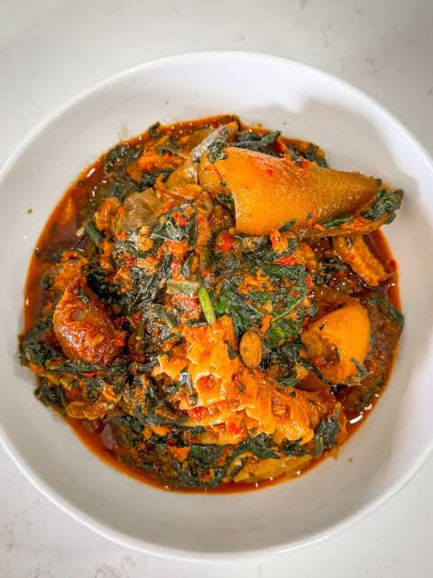

Efo-riro
Homepage

Ingredients
This is anigerian food aassociated with the yoruba tribe. It's main ingredient is vegetable alongside Egusi and Palmoil
- vegetable
. Cook the Proteins
• Wash your assorted meat, beef, or goat meat thoroughly.
• Season with salt, sliced onions, and bouillon (seasoning) cubes, then add a small amount of water and cook until tender.
• Add your stockfish and pomo toward the end of the cooking process until softene
- Egusi
- Palmoil